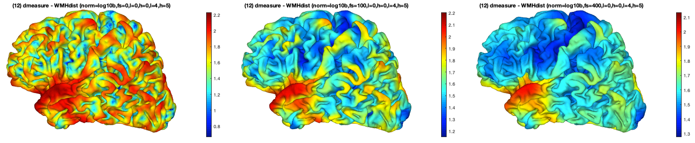
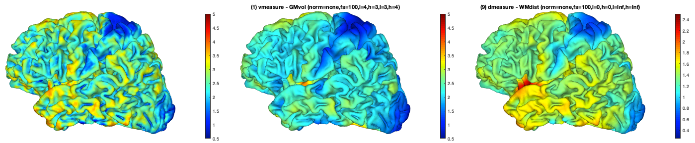

Voxel to surface projection (IN DEVELOPMENT):
The Map voxel-data to the surface batch allows to map voxel information to the cortical surface. It aligns all voxels of a masked region to their closest surface vertex (Figure 1). This alignment is used to map the (a) local volume, (b) the local intensity described by a second input volume, or (c) the shortest distance of the masked region. Although all type of measures describe similar things more global level each has some detailed (dis)advantage compared to the others. For instance, the cortical thickness have a strong correlation to GM volume and very strong correlation to the shortest distance to the WM that is for the central surface about half of the thickness (see Evaluation examples). However, this tool focuses on the projection of subcortical change of the WM rather than cortical aspects but it can also be use to map aspects of lesions or tumors to the cortical surface (see Predefined measures).
 Figure 1: Voxel-based mapping of the (a) local volume, (b) local intensity, or (c) distance of a specified tissue or region to the individual central surface.
Figure 1: Voxel-based mapping of the (a) local volume, (b) local intensity, or (c) distance of a specified tissue or region to the individual central surface.
However, there are also a lot of small differences for the used metric but also the mapping itself. Absolute volume values for instance depend on the sampling resolution of the individual surface and require a special modulated mapping from the individual to the average surface compared to the simple interpolation for intensity or distance data. Alternatively, a second volume can be use to create a relative measure (e.g., the proposition of dysfunctional WM volume of WM hyperintensities to the local WM volume) that is quite similar to the classic definition of a global gyrification index GI = length(folded) / length(unfolded) (Zilles et all, 1989).
Another issue is that you have to assure that the resulting measure is normally distributed. The cortical depth for instance, as the distance to the brain mask, has a ... histogram with many low and a very small number of high values. Here, a log10 transformation and strong smoothing (e.g., 100 mm or even more) allows to support normal distribution required for statistical analysis. The strong smoothing also helps to reduce highly individual, sulci/gyri-specific mapping aspects although it reduce the spatial resolution at the same time (Figure 2).
 Figure 2: Log10 normalization (a) and smoothing (b) are often helpful to support normal distributed that is required for many statistical approaches.
Moreover, nearly all measures depend on brain size in a non-linear way and the use of the (log10-transformed) TIV as confound is required (Hofman, 1989; Im et al., 2008).
Hence, we recommend carful use of all measures especially in case of own definitions. If you use this function please cite the CAT12 toolbox and (xxx).
Predefined measures
The tool was originally developed for the evaluation of WM changes in aging and you can find 2 predefined WMH measures for volume and distance. Moreover, we have added the basic GM measures described in the section Evaluation examples for basic understanding but we suggest to use the ... batch allows more accurate evaluation on sub-millimeter resolution and consideration of the meandering of the cortical layers.
Background
The mapping of volume and intensity presents classical push operations that uses the sum for volumes and mean for intensity. Like all push operations they have the problem that some vertices have a huge amount of aligned voxels (e.g., sulcal vertices for WM mapping) or only very few or even no voxels (e.g., gyral vertices for WM mapping). This finally requires some basic smoothing to reduce this mapping artifact. Although interpolation of the volume allows to reduce this problem it the improvement is negligible because strong smoothing is also required by other reasons, e.g., to remove individual folding effects. The distance mapping on the other side was implemented as pull and for each surface vertex the closes volume voxel of the ROI volume is estimated. However, this also means that we cannot get information of structure hidden behind another one.
The mapping first identified all voxels and use a Delaunay triangulation to support a fast search (O(n log n)) of the closest surface vertices of each voxel for volume and intensity mapping or the closes voxels for the distance measure.
Evaluation examples
To give some rough impression of the mapping expected correlations between GM thickness (estimated in the preprocessing) and the GM volume or the WM distance can be used (Figure 3). Besides volume we have also a clear expectation about the local intensity of the cortex, with increased values in the motor-cortex and occipital lobe (Figure 4).
 Figure 3: Different ways to evaluate the local amount of GM.
 Figure 4: Different ways to evaluate the local amount of GM by extracting the intensities of the intensity normalized T1 map (m[i]*.nii).
Figure 4: Different ways to evaluate the local amount of GM by extracting the intensities of the intensity normalized T1 map (m[i]*.nii).